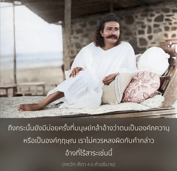

แม้ไม่มีการเกิด ร่างทิพย์ของข้าไม่เคยเสื่อมสลาย และแม้เป็นเจ้าแห่งมวลชีวิต ข้าก็ยังปรากฏในร่างทิพย์เดิมของข้าทุกๆกัป




องค์ภควานฺตรัสเกี่ยวกับลักษณะพิเศษแห่งการเกิดของพระองค์ แม้ทรงอาจปรากฏพระวรกายคล้ายบุคคลธรรมดา แต่ทรงจำทุกสิ่งทุกอย่างเกี่ยวกับ “การเสด็จลงมา” หลายต่อหลายชาติของพระองค์ในอดีตได้ ขณะที่มนุษย์ธรรมดาไม่สามารถจำได้ว่าได้ทำอะไรไปเมื่อหลายชั่วโมงก่อนหน้านี้ หากมีใครมาถามว่าท่านได้ทำอะไรเมื่อวานนี้ในเวลาเดียวกัน สำหรับคนทั่วไปจะตอบทันทีได้ยากมาก เขาจะต้องเค้นความจำว่าเมื่อวานนี้ช่วงเวลาเดียวกันนี้ได้ทำอะไรอยู่ ถึงกระนั้น ยังมีบ่อยครั้งที่มนุษย์กล้าที่จะอ้างว่าตนเป็นองค์ภควานฺ หรือเป็นองค์กฺฤษฺณ เราไม่ควรหลงผิดกับคำกล่าวอ้างที่ไร้สาระเช่นนี้ จากนั้นองค์ภควานฺทรงอธิบายถึง ปฺรกฺฤติ หรือพระวรกายของพระองค์ คำว่า ปฺรกฺฤติ มีความหมายเช่นเดียวกับคำว่า สฺวรูป “ธรรมชาติ” หรือ “รูปลักษณ์ของตนเอง” องค์ภควานฺทรงตรัสว่าพระองค์ทรงปรากฏมาในพระวรกายของพระองค์เอง ทรงไม่ได้เปลี่ยนพระวรกายของพระองค์เยี่ยงสิ่งมีชีวิตทั่วไป ที่เปลี่ยนจากร่างหนึ่งไปสู่อีกร่างหนึ่ง พันธวิญญาณอาจมีร่างหนึ่งในชาตินี้ แต่จะมีร่างอื่นในชาติหน้า ในโลกวัตถุสิ่งมีชีวิตไม่มีร่างกายที่ถาวร แต่จะเปลี่ยนจากร่างหนึ่งไปสู่อีกร่างหนึ่ง อย่างไรก็ดี องค์ภควานฺทรงไม่ได้เป็นเช่นนั้น เมื่อใดที่ทรงปรากฏจะทรงปรากฏในร่างเดิมด้วยพลังเบื้องสูงของพระองค์ อีกนัยหนึ่ง องค์กฺฤษฺณทรงปรากฏพระวรกายในโลกวัตถุนี้ในร่างอมตะเดิมแท้ของพระองค์ ที่มีสองกร ทรงขลุ่ย ทรงปรากฏมาในร่างอมตะของพระองค์เหมือนเดิมโดยปราศจากมลทินของโลกวัตถุนี้ แม้ทรงปรากฏในร่างทิพย์เดิม และทรงเป็นพระผู้เป็นเจ้าแห่งจักรวาล แต่ยังปรากฏว่าทรงประสูติเหมือนกับสิ่งมีชีวิตธรรมดาทั่วไป และแม้ว่าพระวรกายของพระองค์ทรงไม่เสื่อมสลายเหมือนร่างวัตถุ ยังปรากฏว่าองค์ศฺรีกฺฤษฺณทรงเจริญเติบโตจากวัยทารกมาเป็นวัยเด็ก และจากวัยเด็กมาเป็นวัยหนุ่ม แต่เป็นที่น่าอัศจรรย์ว่าพระองค์ทรงไม่แก่ไปกว่าวัยหนุ่ม ขณะที่อยู่ในสมรภูมิ กุรุกฺเษตฺร ทรงมีพระราชนัดดาหลายองค์อยู่ที่พระราชวัง ซึ่งพระองค์ทรงมีพระชนมายุค่อนข้างมากจากการคำนวณทางวัตถุ แต่ทรงดูเหมือนเด็กหนุ่มที่มีอายุประมาณยี่สิบถึงยี่สิบห้าพรรษา เราไม่เคยเห็นภาพขององค์กฺฤษฺณในร่างของผู้สูงอายุ เพราะพระองค์ทรงไม่ชราเหมือนพวกเรา ถึงแม้ทรงเป็นบุคคลผู้อาวุโสที่สุดในขบวนการสร้างทั้งหมด ไม่ว่าในอดีต ปัจจุบัน หรืออนาคต ทั้งพระวรกายและสติปัญญาของพระองค์ทรงไม่เคยเสื่อมสลาย หรือเปลี่ยนแปลง ฉะนั้น จึงปรากฏชัดเจนว่าถึงแม้จะทรงประทับอยู่ในโลกวัตถุ เเต่ทรงอยู่ในร่างอมตะที่ไม่มีการเกิด เปี่ยมไปด้วยความสุขเกษมสำราญ และความรู้ พระวรกายทิพย์ และสติปัญญาของพระองค์ทรงไม่มีการเปลี่ยนแปลง อันที่จริงการปรากฏและไม่ปรากฏของพระองค์ทรงเปรียบเสมือนกับดวงอาทิตย์ขึ้นที่ค่อยๆ เคลื่อนผ่านหน้าเรา และหายลับจากสายตาของเราไป เมื่อดวงอาทิตย์ลับตาเราคิดว่าดวงอาทิตย์ตก และเมื่อดวงอาทิตย์อยู่ในสายตาของเรา เราคิดว่าดวงอาทิตย์อยู่บนขอบฟ้า อันที่จริงดวงอาทิตย์อยู่ในตำแหน่งถาวรเสมอ แต่เนื่องมาจากข้อบกพร่องของเราเอง ประสาทสัมผัสที่สมบูรณ์ไม่เพียงพอของเราคำนวณการปรากฏและไม่ปรากฏของดวงอาทิตย์ในท้องฟ้า และเพราะว่าการปรากฏและไม่ปรากฏขององค์กฺฤษฺณทรงแตกต่างจากสิ่งมีชีวิตสามัญธรรมดาทั่วไปโดยสิ้นเชิง จึงเป็นหลักฐานว่าพระองค์ทรงเป็นอมตะ เปี่ยมไปด้วยความสุขเกษมสำราญ และความรู้ เนื่องมาจากพลังอำนาจเบื้องสูงของพระองค์ และปราศจากมลทินจากธรรมชาติวัตถุ คัมภีร์พระเวทได้ยืนยันไว้เช่นกันว่าบุคลิกภาพสูงสุดแห่งพระเจ้าทรงไม่มีการเกิด แต่ยังปรากฏว่าพระองค์ทรงเกิดมาในอวตารหลากหลายมากมาย ภาคผนวกของวรรณกรรมพระเวทยืนยันไว้เช่นกันว่า แม้ดูเหมือนว่าจะมีการเกิด แต่พระองค์ทรงไม่มีการเปลี่ยนแปลงพระวรกาย ใน ภาควต พระองค์ทรงปรากฏต่อหน้าพระพักตร์ของพระมารดาในรูปของพระนารายณ์สี่กร พร้อมทั้งเครื่องประดับหกชนิดด้วยความมั่งคั่งสมบูรณ์ การปรากฏมาในพระวรกายอมตะเดิมแท้ของพระองค์ทรงเป็นพระเมตตาธิคุณอันหาที่สุดไม่ได้ ที่ทรงประทานแก่สิ่งมีชีวิต เพื่อให้พวกเราสามารถทำสมาธิอยู่ที่องค์ภควานฺได้ตามความเป็นจริง ไม่ใช่เป็นการกุขึ้น หรือเป็นจินตนาการจากจิตใจของเรา ดังเช่นพวก มายาวาที คิดผิดๆ ว่าพระวรกายขององค์ภควานฺทรงควรเป็นเช่นนั้นหรือเช่นนี้ คำว่า มายา หรือ อาตฺม-มายา หมายถึง พระเมตตาธิคุณอันหาที่สุดไม่ได้ขององค์ภควานฺ ตามพจนานุกรม วิศฺว-โกศ องค์ภควานฺทรงมีจิตสำนึกถึงการปรากฏและไม่ปรากฏของพระองค์ในอดีต แต่สิ่งมีชีวิตจะลืมทุกสิ่งทุกอย่างเกี่ยวกับอดีตชาติทันทีที่ได้รับร่างใหม่ พระองค์ทรงเป็นองค์ภควานฺของมวลชีวิต เพราะทรงปฏิบัติกิจกรรมอันมหัศจรรย์เหนือมนุษย์ขณะที่ทรงประทับอยู่บนโลกนี้ ดังนั้น องค์ภควานฺทรงเป็นสัจธรรมเหมือนเดิมอยู่เสมอ และทรงเป็นสัจธรรมที่ไม่มีข้อแตกต่างระหว่างพระวรกาย และดวงวิญญาณของพระองค์ หรือระหว่างคุณสมบัติและพระวรกายของพระองค์ อาจมีคำถามว่า แล้วทำไมองค์ภควานฺจึงทรงปรากฏและไม่ปรากฏบนโลกนี้ คำถามนี้จะอธิบายในโศลกต่อไป